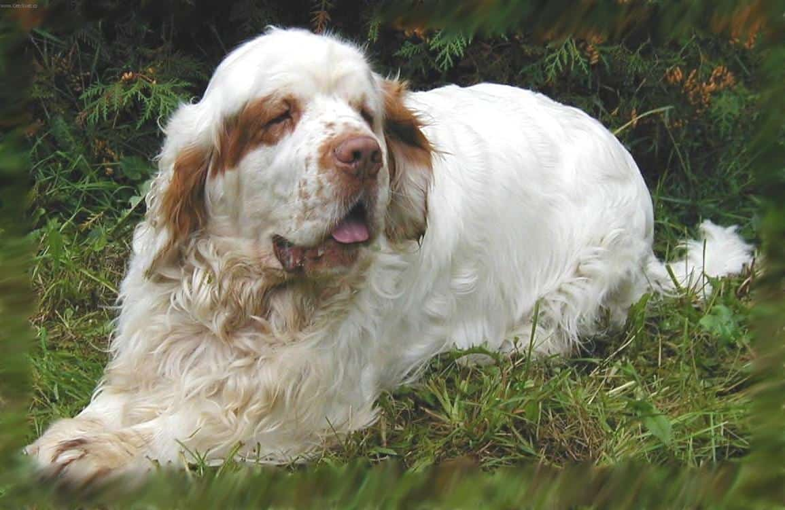
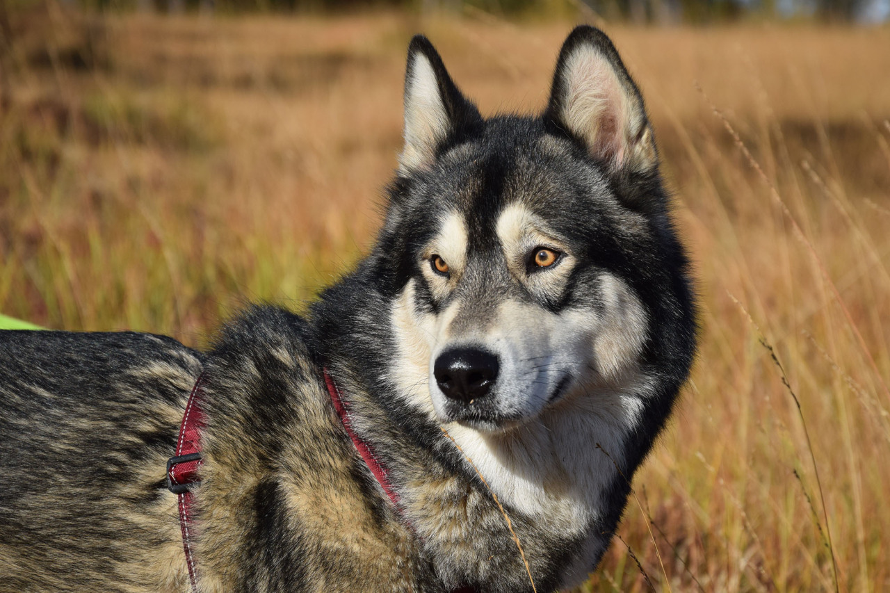
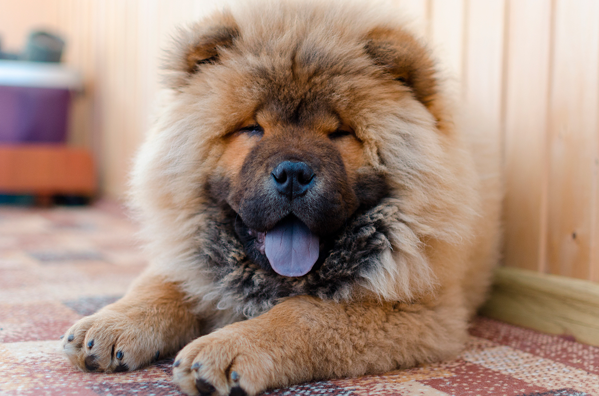

Clumber Spaniel
El clumber spaniel es un perro francés que se creó mediante el cruce entre spaniels de los Alpes y bassets franceses para labores de cacería.

Alusky
El alusky nace del cruce entre el husky siberiano y el alaskan malamute, mezcla que se originó en Alaska hace varios años sin saber con certeza cuándo ocurrió.

Chow Chow
El perro chow chow es probablemente una de las razas caninas originarias de China más populares de todo mundo.